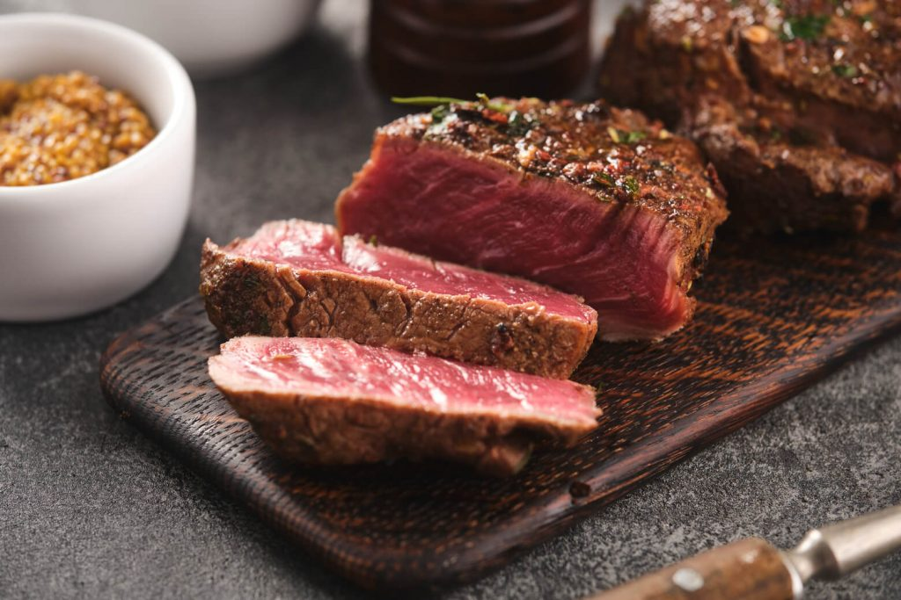

Garlic Butter Wagyu Beef Recipe

How to make Garlic Butter Wagyu Beef
Amazing pan-seared Wagyu beef served with compound garlic herb butter on top.
Every slice of the steak is juicy, tender, and loaded with a ton of flavor.
Ingredients
- Wagyu Beef (Ribeye, New York strip, or Filet Mignon)
- Salt
- Ground Black Pepper
- Salted Butter
- Olive Oil
- Minced Garlic
- Chopped Parsley
Steps
- Season Wagyu beef with salt and ground black pepper.
- Prepare garlic butter by mixing salted butter, garlic, and parsley in a bowl.
- heat a cast-iron skillet or other heavy skillet until smoking hot, then add oil.
Sear the steak in the skillet for 2 minutes on each side.
Before flipping to the other side, sear the fatty edge of the steak until brown and aromatic.
- Serve with a dollop of garlic butter on top.
Back